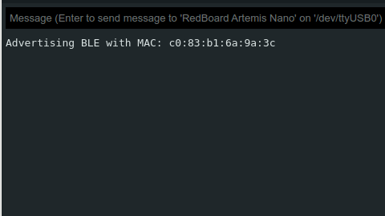
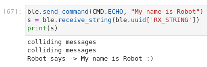
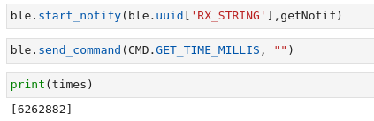
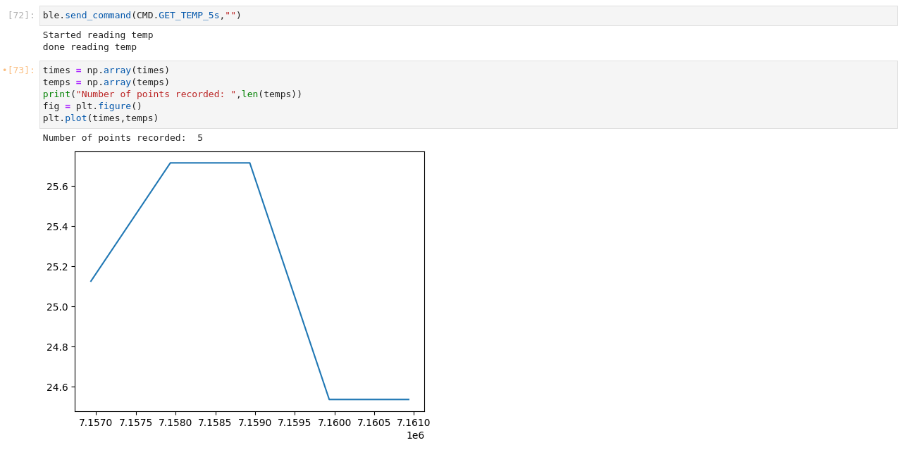
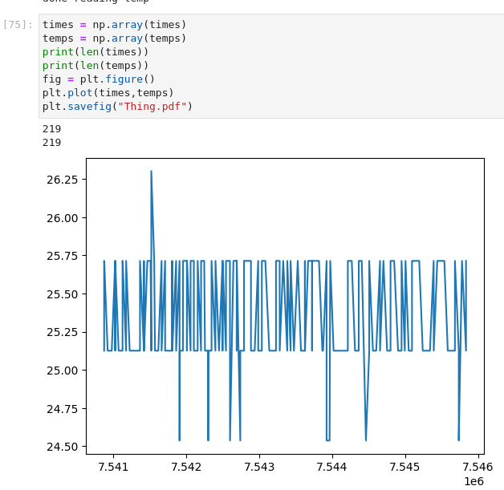
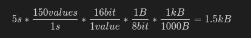
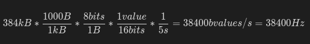

Lab 2
Lab 2 was an introduction to bluetooth communication with the artemis board. It required both modifying .ino files controlling the arduino as well as modifying python code allowing a host computer to communicate with the artemis over bluetooth.
Prelab
Setup
To setup the lab, first a python virtual environment had to be installed to isolate my python packages. Then, I had to activate the virtual environment and install necessary packages to run the python code. Then, I had to download and extract the codebase into the adjacent directory. Then, I had to install ArduinoBLE and the prelab was finished.
As can see by this iamge, when the code is loaded on the artemis, the MAC address can be seen on the serial console.

Codebase
In the codebase, the operation works by sending BLE_Characteristic values, in particualr for this lab, strings. A uuid and MAC address are used to send these characteristic values between the artemis and host computer. On both sides are various functions to process these characterstic values and pack and unpack these characteristic to more easy to use values. The python code comes with commands to send to the artemis and the artemis code can process these commands on its end and send values back in response to the command through resending BLE_Characteristic strings.
Lab Tasks
Configurations:
First, the “artemis_address” variable had to be changed to the MAC address of the artemis and the “ble_service” variable had to be changed to a generated UUID as seen in this connections.yaml code
artemis_address: 'c0:83:b1:6a:9a:3c'
ble_service: '1d7c6224-376f-4e20-a225-3c74a3e71e2e'
characteristics:
TX_CMD_STRING: '9750f60b-9c9c-4158-b620-02ec9521cd99'
RX_FLOAT: '27616294-3063-4ecc-b60b-3470ddef2938'
RX_STRING: 'f235a225-6735-4d73-94cb-ee5dfce9ba83'
and the RX_STRING ID can be seen matching the TX_STRING value in this artemis code.
#define BLE_UUID_TX_STRING "f235a225-6735-4d73-94cb-ee5dfce9ba83"
The AT_LEAST_MAC_OS_12 boolean was also changed shown by this code
async def _get_ble_device(self, timeout=10.0):
if True:
device = None
async with BleakScanner(service_uuids=[self.service_uuid]) as scanner:
start_time = time.time()
while (time.time() - start_time) <= timeout:
await asyncio.sleep(2)
if scanner.discovered_devices:
device = scanner.discovered_devices[0]
break
demo.ipynb:
As can be seen by the video, the demo was completed with no issues
Send Echo Command
The ECHO command is like PING in that it can ensure data is being sent correctly to the artemis. To create this, the ECHO command had to be added to the CommandTypes enum on the artemis code as well as the cmd_types.py file. Then in the artemis code, a case statement had to be added to send a characteristic string with “Echo” written in it. Then, in this picture, the ECHO command is sent to the artemis with the send_command function, and the receive_string command is used to receive the response from the artemis.

Get Time Command
To get important time data showing how long the robot has been operating the command GET_TIME_MILLIS was created. the setup was done just as ECHO but instead of appending the received command to the characteristic string the operation was this.
tx_estring_value.append("T:");
tx_estring_value.append((int)millis());
when executed the results are shown here.

As explained in the notification handler later, the list contains the time extracted from the command.
Notification Handler
As seen in the previous command, a notification handler was made with start_notify, the function used for this notification handler used a state machine and two lists, temps and times. If a begin or end message was sent, the state machine would set the tempState to 1 so that the next messages would be parsed, split between the temperature and its associated time and then stop parsing messages this way when an end message is received. The handler also has an exception for the get time command to only insert the time into the array. This allows modularity as only a start and message are needed to define when to receive certain messages, so various commands and speeds can be added to this handler. With times and temperatures stored in lists, its very easy to analyze the data afterwards.
tempState = 0
temps = []
times = []
def getNotif(uuid,arr):
global tempState
global times
global temps
arr = str(arr,'UTF-8')
if(arr == "temp_begin"):
temps = []
times = []
tempState = 1
print("Started reading temp")
elif(arr == "temp_end"):
tempState = 0
print("done reading temp")
elif(tempState > 0):
if('T' in arr and 'C' in arr):
times.append(int(arr.split('|')[0][2:]))
temps.append(float(arr.split('|')[1][2:]))
elif('T' in arr):
times.append(int(arr[2:]))
else:
print("colliding messages")
Get Temperature Command
To get important temperature data and to be able to compare against time, I had to create GET_TEMP_5s. The same command adding procedure was done to add this command to the existing code, this time doing,
tx_estring_value.clear();
tx_estring_value.append("T:");
tx_estring_value.append((int)millis());
tx_estring_value.append("|");
tx_estring_value.append("C:");
tx_estring_value.append(getTempDegC());
Doing this in a for loop 5 times and then sending the characteristic string.
The notification handler parses this message extracting time from what comes after ‘T:’ and temperature from after ‘C:’ and inserts them into the temps and times lists. Using numpy to plot this data shows this result.

As can be seen, 5 points were recorded each a second apart showing temperature data.
For GET_TEMP_5s_RAPID, the same procedure was done, but instead of sending in a loop defined by
for(int i = 0; i < 5; i++){
delay(1000);
the loop was instead defined byo
currTime = (int)millis();
while((int)millis() - currTime < 5000){
therefore continuously sending data instead of waiting every second. This resulted in this data.

As can be seen, 219 points were recorded showing a much more precise measurement of the temperature over 5 seconds
Both of these methods required the actions
tx_estring_value.clear();
tx_estring_value.append("temp_begin");
tx_characteristic_string.writeValue(tx_estring_value.c_str());
and
tx_estring_value.clear();
tx_estring_value.append("temp_end");
tx_characteristic_string.writeValue(tx_estring_value.c_str());
to make the notification handler start reading data
Limitations
if the artemis has 384kB of RAM, this value can store a large amount of data as 5s of 16-bit values taken at 150Hz is  The limiting factor could be a large frequency such as 
which happens to be a standard baud rate for UART communication, so sending 16-bit values continuously over UART could stress the artemis’s ram.
References
I talked with Ignacio Romo about how to parse the string in the notification handler using the str(,”UTF-8) function